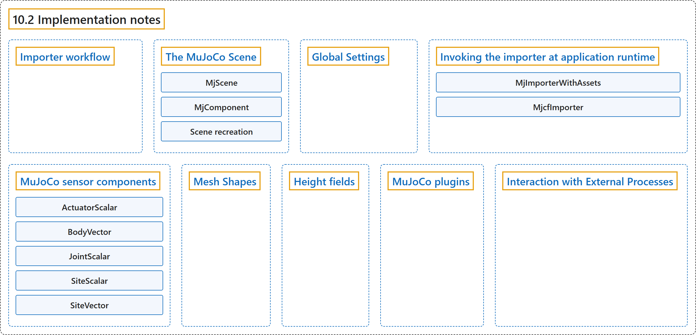

10.2 Implementation notes
Classification

Glossary
| Term | Definition | 中文翻译 | Source |
|---|---|---|---|
| 10.2 Implementation notes 实现说明 |
(No definition) | （无定义） | Google DeepMind, n.d., "Implementation notes" |
| Importer workflow 导入器工作流程 |
"When the user selects an MJCF file, the importer first loads the file in MuJoCo, saves it to a temporary location, and then processes the generated saved file." | 用户选择一个 MJCF 文件时，导入器先在 MuJoCo 中加载该文件，把它保存到临时位置，然后处理生成的保存文件。 | Google DeepMind, n.d., "Importer workflow", para. 1 |
| The MuJoCo Scene MuJoCo 场景 |
(context) "When a MuJoCo scene is created, the MjScene component first scans the scene for all instances of MjComponent." | （语境）创建 MuJoCo 场景时，MjScene 组件先扫描场景，找出所有 MjComponent 实例。 | Google DeepMind, n.d., "The MuJoCo Scene", para. 1 |
| MjScene MjScene 组件类 |
"MjScene combines these XML elements according to the hierarchy of the respective game objects and creates a single MJCF description of the physics model." | MjScene 按照各个游戏对象的层级组合这些 XML 元素，生成物理模型的单个 MJCF 描述。 | Google DeepMind, n.d., "The MuJoCo Scene", para. 1 |
| MjComponent MjComponent 组件类 |
"Each component creates its own MJCF element using Unity scene’s spatial structure to describe the model’s initial reference pose (called qpos0 in MuJoCo)." | 每个组件利用 Unity 场景的空间结构创建自己的 MJCF 元素，以描述模型的初始参考位姿（在 MuJoCo 中称为 qpos0）。 | Google DeepMind, n.d., "The MuJoCo Scene", para. 1 |
| Scene recreation 场景重建 |
"Scene recreation maintains continuity of physics and state in the following way:" | 场景重建按以下方式保持物理和状态的连续性： | Google DeepMind, n.d., "The MuJoCo Scene", para. 3 |
| Global Settings 全局设置 |
"This component is responsible for all the configuration options that are included in the fixed-size, singleton, global elements of MJCF." | 这个组件负责 MJCF 中固定大小、单例的全局元素所包含的所有配置选项。 | Google DeepMind, n.d., "Global Settings", para. 1 |
| Invoking the importer at application runtime 在应用运行时调用导入器 |
(context) "It can be invoked at play-time (it doesn’t involve Editor functionality), and it doesn’t invoke any functions of the MuJoCo library." | （语境）它可以在运行（play）时调用（不涉及编辑器功能），也不调用 MuJoCo 库的任何函数。 | Google DeepMind, n.d., "Invoking the importer at application runtime", para. 1 |
| MjImporterWithAssets MjImporterWithAssets 类 |
"The importer is implemented by the class MjImporterWithAssets, which is a subclass of MjcfImporter." | 导入器由类 MjImporterWithAssets 实现，它是 MjcfImporter 的子类。 | Google DeepMind, n.d., "Invoking the importer at application runtime", para. 1 |
| MjcfImporter MjcfImporter 类 |
"This parent class takes an MJCF string and generates the hierarchy of components." | 这个父类接收一个 MJCF 字符串并生成组件的层级结构。 | Google DeepMind, n.d., "Invoking the importer at application runtime", para. 1 |
| MuJoCo sensor components MuJoCo 传感器组件 |
"Therefore, we created classes according to the type of object (actuator / body / geom / joint / site) whose properties are measured, and the type (scalar / vector / quaternion) of the measured data." | 因此，我们按照被测属性所属对象的类型（执行器 / 刚体 / geom / 关节 / site）和被测数据的类型（标量 / 向量 / 四元数）来创建类。 | Google DeepMind, n.d., "MuJoCo sensor components", para. 1 |
| ActuatorScalar ActuatorScalar 类 |
(No definition) | （无定义） | Google DeepMind, n.d., "MuJoCo sensor components" |
| BodyVector BodyVector 类 |
(No definition) | （无定义） | Google DeepMind, n.d., "MuJoCo sensor components" |
| JointScalar JointScalar 类 |
(No definition) | （无定义） | Google DeepMind, n.d., "MuJoCo sensor components" |
| SiteScalar SiteScalar 类 |
(No definition) | （无定义） | Google DeepMind, n.d., "MuJoCo sensor components" |
| SiteVector SiteVector 类 |
(No definition) | （无定义） | Google DeepMind, n.d., "MuJoCo sensor components" |
| Mesh Shapes 网格形状 |
"The plug-in allows using arbitrary Unity meshes for MuJoCo collision." | 插件允许把任意 Unity 网格用于 MuJoCo 碰撞。 | Google DeepMind, n.d., "Mesh Shapes", para. 1 |
| Height fields 高度场 |
"MuJoCo hfields are represented in Unity through terrain gameobjects." | MuJoCo 的高度场在 Unity 中通过地形游戏对象表示。 | Google DeepMind, n.d., "Height fields", para. 1 |
| MuJoCo plugins MuJoCo 插件 |
(context) "The current version of the Unity package does not support loading MJCF scenes that use MuJoCo plugins" | （语境）当前版本的 Unity 包不支持加载使用 MuJoCo 插件的 MJCF 场景 | Google DeepMind, n.d., "MuJoCo plugins", para. 1 |
| Interaction with External Processes 与外部进程的交互 |
(context) "In contrast, our plug-in relies on Unity to step the simulation." | （语境）相比之下，我们的插件依靠 Unity 来步进仿真。 | Google DeepMind, n.d., "Interaction with External Processes", para. 1 |
References
Google DeepMind. (n.d.). Unity Plug-in. MuJoCo Documentation (Version 3.17.0). Retrieved October 31, 2026, from https://mujoco.readthedocs.io/en/stable/unity.html